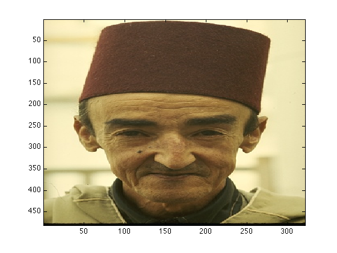
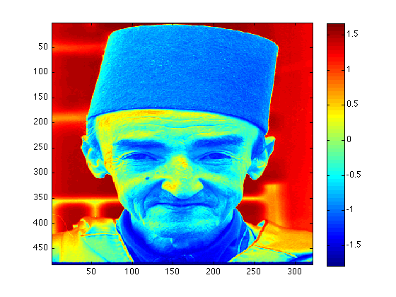

Contents
What pre-processing was applied to images from BSD?
- This demo program will illustrate the pre-processing that was applied to images from the Berkeley Segmentation Dataset and Benchmark (BSD): http://www.eecs.berkeley.edu/Research/Projects/CS/vision/grouping/segbench/.
function z = preprocess_image( imgfile )
Copyright Notice
%========================================================================= % COPYRIGHT NOTICE AND LICENSE INFO: % % * Copyright (C) 2010, Gautam V. Pendse, McLean Hospital % % * Matlab demo illustrating the pre-processing applied to natural images in: % % Gautam V. Pendse, "PMOG: The projected mixture of Gaussians model with application to blind source separation", % arXiv:1008.2743v1 [stat.ML, cs.AI, stat.ME], 46 pages, 9 figures, 2010. [5.5 MB] % % * License: Please see the file license.txt included with the code distribution % % % * If you use this code in your own work or alter this code, please cite the above paper. This code is distributed "as is" and no % guarantee is given as to the accuracy or validity of the results produced by running this code. No responsibility will be assumed % of the effects of running this code or using its results in any manner. % % * AUTHOR: GAUTAM V. PENDSE % DATE: 2nd April 2010 %=========================================================================
Read input image
- This example illustrates pre-processing on a sample image '189080.jpg' from BSD
- Read color image and convert to grayscale by averaging across the 3 (rgb) colorspaces
% read input file A = imread( imgfile ); % save a copy of the original image A_orig = A; % convert to double A = double(A); % average across rgb A = mean(A,3);
Pre-process image
- Make image zero mean and unit standard deviation
% get mean intensity in A mean_A = mean(A(:)); % get std of intensity in A std_A = std(A(:)); % make A zero mean and unit standard deviation A = ( A - mean_A ) / std_A;
Check results
- Plot original and pre-processed image
% first plot original image figure; imagesc( A_orig ); % this is rgb image % next plot pre-processed image figure; imagesc( A ); % this is grayscale image colorbar; 
end